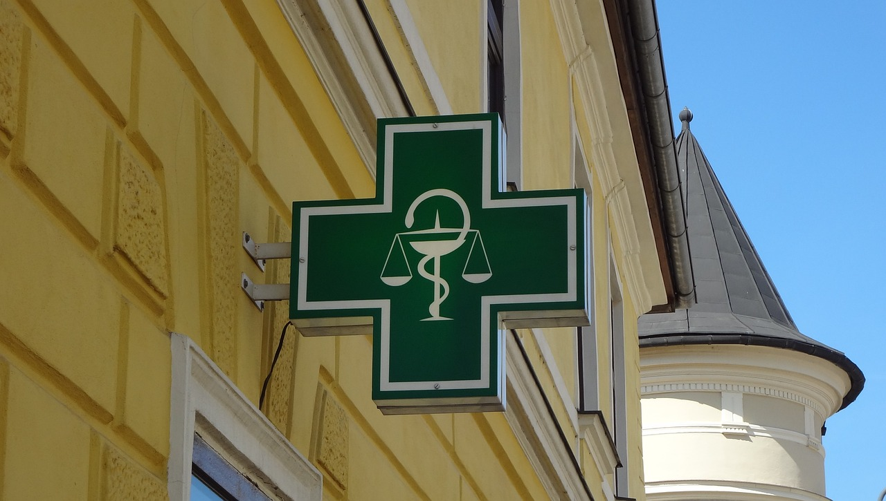

[주요 특징]
운영 시간: 일반적으로 밤 10시부터 새벽 1시까지 운영하며, 지자체별로 운영 요일은 다를 수 있습니다.
운영 목적:심야시간대 의약품 접근성 향상.
약사의 대면 복약 지도를 통한 의약품 안전 사용 지원.
경증 환자의 응급실 유입 감소.
지자체별 운영: 서울, 경기, 천안 등 여러 지자체에서 공공심야약국을 지정하여 운영하고 있습니다. 각 지자체 웹사이트나 관련 지도 앱(예: 스마트서울맵)에서 운영 약국 및 시간을 확인할 수 있습니다. 참고 사항 운영 약국의 다양성: 전국적으로 공공심야약국이 확대되고 있지만, 지역에 따라 운영 약국의 수가 달라 약국 이용이 불편한 지역도 존재합니다. 운영 지원: 정부와 지자체는 운영 약국에 시간당 인건비 등을 지원하고 있지만, 일부 약국은 지원금만으로는 운영에 어려움을 겪기도 합니다.